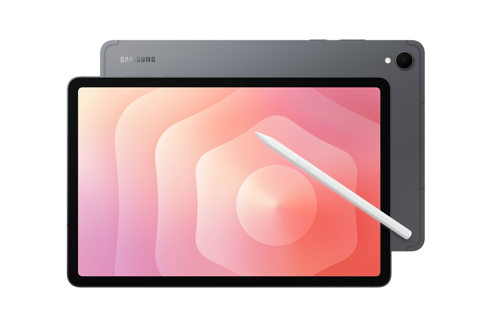
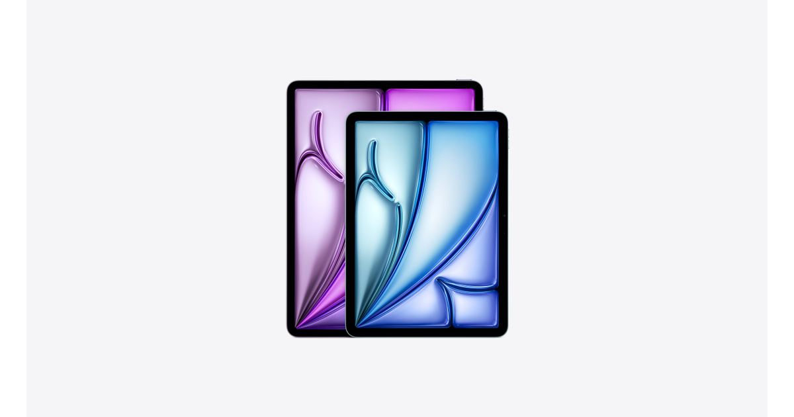

갤럭시 탭 S11 아이패드 에어 비교, S펜 포함 여부로 갈려요
갤럭시 탭 S11은 삼성전자의 안드로이드 태블릿이고, 아이패드 에어는 애플의 아이패드 라인업이에요. 필기를 자주 하시나요, 아니면 펜을 따로 살 마음이 있으신가요? 이 두 질문에 먼저 답해보면 갤럭시 탭 S11과 아이패드 에어 중 뭘 볼지 갈려요.
두 태블릿 모두 요즘 자주 비교되지만, 펜을 다루는 방식부터 서로 달라요. 갤럭시 탭 S11은 상자를 열면 S펜이 바로 들어있어요. 아이패드 에어는 본체만 사는 구조라 애플펜슬은 따로 골라야 해요. 이 차이가 실제 구매 비용에도 영향을 줘요.
이 글의 가격·스펙은 2026년 8월 13일에 삼성전자·애플 공식 페이지를 다시 확인했어요. 공식 페이지에서 확정하지 못한 값은 적지 않았어요.
갤럭시 탭 S11과 아이패드 에어, S펜은 기본으로 들어있나요?
갤럭시 탭 S11은 S펜이 기본 포함이고, 아이패드 에어는 애플펜슬이 별도 판매예요.
삼성 공식 페이지는 "갤럭시 탭 S11에는 정밀한 메모 작성과 창의적인 작업을 위한 S펜…이 포함되어 있습니다"라고 소개해요(삼성 공식, 2026.08.13 기준). 구성품을 묻는 자주 묻는 질문에도 S펜이 포함된 구성품 목록이 나와요.
아이패드 에어 구매 페이지는 "액세서리는 별도로 판매되며, 판매는 재고에 한합니다"라고 안내해요(애플 공식, 2026.08.13 기준). 이 액세서리 항목에 애플펜슬이 들어가요.

갤럭시 탭 S11 그레이 색상, S펜이 함께 놓인 삼성 뉴스룸 공식 이미지예요.
이미지 출처: 삼성 뉴스룸 — '갤럭시 탭 S11 시리즈' 공개 · 네이버 본문엔 받아서 재업로드 권장
아이패드 에어에 펜까지 더하면 얼마가 더 드나요?
아이패드 에어에 펜까지 더하면 최소 11만9000원이 추가로 들어요.
이 가격은 애플펜슬 USB-C 모델 기준이에요. 애플펜슬 프로는 19만5000원이에요(애플 공식, 2026.08.13 기준).
애플 공식 페이지는 두 펜 모두 이 아이패드 에어와 호환된다고 안내해요.

아이패드 에어 두 모델이 함께 보이는 애플 공식 이미지예요.
이미지 출처: 애플 공식 — 아이패드 에어 구매 페이지 · 네이버 본문엔 받아서 재업로드 권장
| 항목 | 갤럭시 탭 S11 | 아이패드 에어 |
|---|---|---|
| 펜 | S펜 기본 포함 | 애플펜슬 별도(11만9000원~19만5000원) |
| 시작 저장공간 | 128GB | 128GB(동일) |
| 본체 가격(2026.08.13 기준) | 삼성닷컴 구매 페이지에서 직접 확인 | 11형 124만9000원 · 13형 154만9000원 |
| 펜까지 더한 최소 비용 | 본체가 그대로(추가 비용 없음) | 11형 136만8000원 · 13형 166만8000원부터 |
표: 펜 포함 여부에 따른 비용 차이(2026.08.13 기준)
갤럭시 탭 S11 쪽은 출고가를 이 글에서 하나의 숫자로 못박지 못했어요. 삼성닷컴 구매 페이지는 접속할 때마다 서로 다른 금액을 보여줘서, 정가인지 할인가인지 이 글에서는 구분하지 못했어요.
그래서 정확한 가격은 삼성닷컴 구매 페이지에서 직접 확인하시는 게 정확해요. 확인 시점에 따라 달라질 수 있어요.
화면은 어떻게 다른가요?
갤럭시 탭 S11은 AMOLED, 아이패드 에어는 IPS 계열 디스플레이를 써요.
갤럭시 탭 S11의 디스플레이는 Dynamic AMOLED 2X이고, 화면 크기는 278.1mm예요(삼성 공식, 2026.08.13 기준). 최대 밝기는 1,600nits, 고휘도모드 야외 밝기는 1,000nits라고 안내돼 있어요.
화면 주사율은 최대 120Hz예요.
아이패드 에어는 Liquid Retina라는 이름의 IPS 디스플레이를 써요(애플 공식, 2026.08.13 기준). 11형은 화면 크기가 27.6cm, 13형은 32.8cm예요.
밝기는 11형이 500니트, 13형이 600니트로 애플 공식 스펙에 나와요. 아이패드 에어는 애플펜슬 호버 기능도 지원한다고 공식 스펙에 나와요(애플 공식, 2026.08.13 기준).
| 항목 | 갤럭시 탭 S11 | 아이패드 에어 |
|---|---|---|
| 디스플레이 종류 | Dynamic AMOLED 2X | Liquid Retina(IPS) |
| 화면 크기(대각선, 직사각형 기준) | 278.1mm | 11형 27.6cm · 13형 32.8cm |
| 밝기 | 최대 1,600nits(HBM 야외 1,000nits) | 11형 500니트 · 13형 600니트 |
| 무게(Wi-Fi 모델) | 약 469g | 11형 464g · 13형 616g |
| 두께 | 5.5mm | 6.1mm |
표: 디스플레이·무게 비교(각 공식 스펙 페이지 기준, 2026.08.13)
두 회사의 밝기 표기 기준(측정 조건)이 같다고 밝힌 자료는 이 글에서 찾지 못했어요. 그래서 수치를 그대로 비교하기보다 각 공식 스펙으로 참고하면 좋아요.
저장 용량은 같은 조건에서 비교할 수 있나요?
네, 두 제품 모두 128GB부터 시작해서 같은 조건에서 비교할 수 있어요.
갤럭시 탭 S11은 128GB, 256GB, 512GB 세 가지 저장공간에 12GB 메모리를 공통으로 써요(삼성 공식, 2026.08.13 기준).
아이패드 에어는 128GB, 256GB, 512GB, 1TB 네 가지로 나와요(애플 공식, 2026.08.13 기준).
| 항목 | 갤럭시 탭 S11 | 아이패드 에어 |
|---|---|---|
| 저장 용량 옵션 | 128GB · 256GB · 512GB | 128GB · 256GB · 512GB · 1TB |
| 시작 용량 | 128GB | 128GB(동일) |
표: 저장 용량 옵션(각 공식 페이지 기준, 2026.08.13)
그럼 뭘 골라야 하나요?
펜을 얼마나 자주 쓰는지, 추가 비용을 얼마나 들일 수 있는지에 따라 갈려요.
S펜이 기본으로 필요하고 추가 비용 없이 바로 쓰고 싶으면 갤럭시 탭 S11 쪽이 그 조건에 맞아요. 애플 생태계 앱을 쓰고 싶고 펜 비용을 더 낼 수 있으면 아이패드 에어 쪽이에요.
| 조건 | 모델 | 근거 |
|---|---|---|
| 펜 포함 여부부터 보고 싶다면 | 갤럭시 탭 S11 | S펜 기본 포함, 추가 비용 없음 |
| 애플 생태계·앱을 쓰고 싶다면 | 아이패드 에어 | 애플펜슬은 별도지만 11만9000원부터 추가 가능 |
| 더 큰 화면에서 저장공간까지 넉넉히 쓰고 싶다면 | 아이패드 에어 13형 | 32.8cm 화면, 1TB까지 저장공간 선택 가능 |
표: 이런 분께는
두 제품 모두 태블릿이라는 공통점은 같지만, 펜을 다루는 방식과 비용 구조는 서로 달라요. 고르기 전에 위 표의 조건부터 짚어보면 도움이 돼요.
자주 묻는 질문
Q. 갤럭시 탭 S11은 어떤 색상으로 나오나요?
그레이와 실버, 2가지 색상으로 나와요. 색상과 모델 구성은 국가·통신사에 따라 달라질 수 있다고 삼성 공식 페이지에 안내돼 있어요(삼성 공식, 2026.08.13 기준).
Q. 두 제품의 최대 저장 용량도 같나요?
아니요, 최대 용량은 달라요. 갤럭시 탭 S11은 512GB까지, 아이패드 에어는 1TB까지 나와요(각 공식 페이지 기준, 2026.08.13).
Q. 갤럭시 탭 S11에 5G 모델도 있나요?
네, 갤럭시 탭 S11은 Wi-Fi 모델과 5G 모델로 나와요. 무게는 Wi-Fi 모델 약 469g, 5G 모델 약 471g으로 삼성 공식 페이지에 안내돼 있어요(삼성 공식, 2026.08.13 기준).
참고한 곳
· 삼성 공식 — 갤럭시 탭 S11 제품 페이지
· 삼성 뉴스룸 — '갤럭시 탭 S11 시리즈' 공개(이미지 출처)
· 애플 공식 — 아이패드 에어 구매 페이지
· 애플 공식 — 아이패드 에어 기술 사양
하루 정리
· 이 글은 2026년 8월 13일 삼성전자·애플 공식 페이지를 기준으로 정리했어요.
· 갤럭시 탭 S11은 S펜이 기본 포함이고, 아이패드 에어는 애플펜슬이 11만9000원부터 별도예요.
· 펜을 바로 쓰고 싶으면 갤럭시 탭 S11, 애플 생태계와 큰 화면을 더 보고 싶으면 아이패드 에어 13형을 살펴보면 돼요.
갤럭시 탭 S11 출고가는 삼성닷컴 구매 페이지마다 다르게 나타나 이 글에서 하나의 숫자로 정리하지 못했어요. 직접 확인해 보시는 게 정확해요.